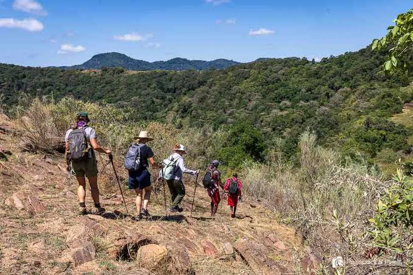
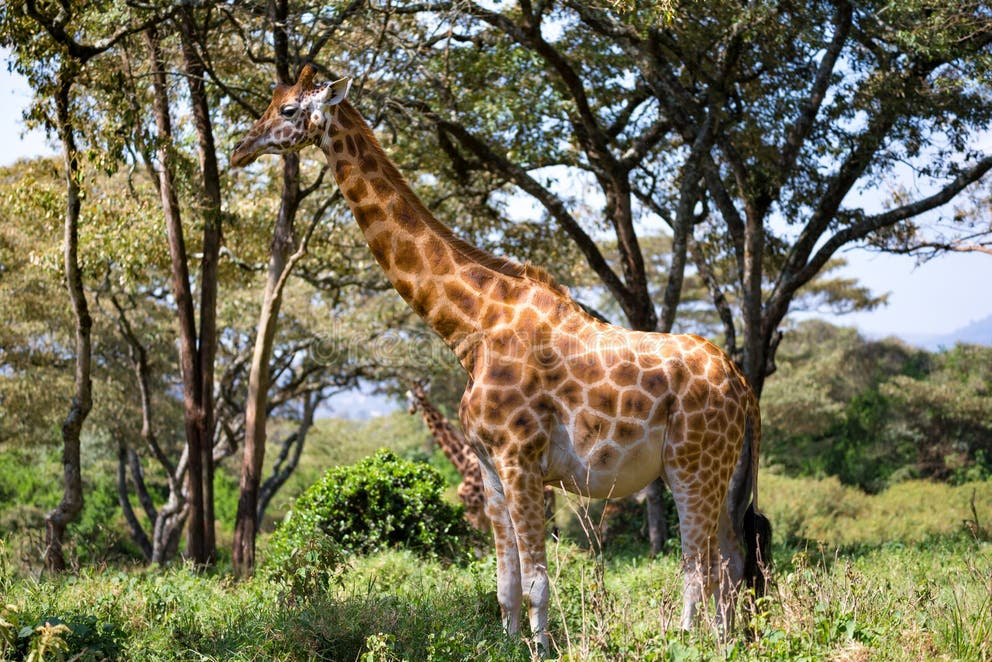

To share Kenya's wild places responsibly, so that every visit helps protect nature and supports the people who live beside it.
ABOUT US / KENYA
Walking lightly, giving back
Safari Crest is a Kenyan ecotourism organization. We lead guided hikes and wildlife experiences that help people enjoy nature while protecting it.
OUR STORY
Started by guides who love these trails
Safari Crest began with a small group of Kenyan guides who grew up near the Ngong Hills and wanted visitors to see the landscape the way they do: as a living place that needs care.
Today we organize small-group hikes, wildlife mornings and tree-planting days, all led by licensed local guides. Every trip is planned to keep the impact on wildlife and habitats as low as possible.

Small groups, trained local guides, honest information and a fixed share of every fee given to conservation and communities.
What we stand for
These four ideas guide how we plan trips, work with partners and look after our visitors.
Respect for nature
We keep groups small, stay on marked trails and keep a safe distance from wildlife.
Community first
We hire local guides and share part of every fee with host communities near conservation areas.
Safety and trust
Guides are licensed and first-aid trained, and carry radios on every trip.
Learning by doing
Guides share what they know about plants, birds and animals so visitors leave curious and better informed.
Tree-planting days
Visitors and local volunteers plant indigenous seedlings on degraded slopes. Trees are watered and monitored after planting.
Community partnerships
We buy food, transport and crafts locally, and fund small projects chosen together with community members.
Visitor education
Each trip begins with a short talk on the local ecosystem and how to enjoy it without harming it.
OUR GUIDES
Local people, trained and licensed
Our guides know the hills, the wildlife and the weather. They are licensed, first-aid trained and experienced in leading groups of different ages and fitness levels. They also decide when a route needs to change, and their decision on safety is final.
- Licensed and first-aid trained
- Born or based near the trails they lead
- Trained in wildlife and trail etiquette

Come and walk with us
See the experiences we offer or get in touch with any questions.